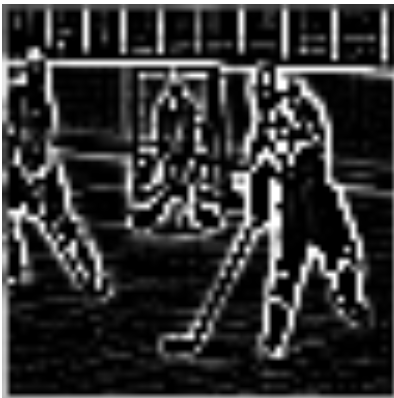

The concept of style transfer was first outlined in a 2015 paper titled “A Neural Algorithm of Artistic Style,” by Gatys et. al. The paper describes a model that uses convolutional neural networks, which contain hierarchical representation of image features. The authors found that certain layers of convolutional neural networks that had been trained for image classification (object recognition) could be used to represent either only content or only style. The authors extracted these layers from the VGG19 classification network. These layers are referred to as the content and style features.
To generate the final image, Gatys et. al use an optimization technique where two loss functions are minimized, one for style and another for content. With this method, the output starts as an image of random noise. That noise is updated to minimize the difference (called the loss) between content and style features of the new image and the content and style features of the two target images. With each iteration the overall loss, a weighted sum of content and style losses, decreases, and eventually the output image depicts the style “transferred” onto the content.
The technique used in Gatys et. al is computationally intensive. Because it uses an iterative process, it can take several minutes to stylize an image of 512 x 512 pixels. Ulyanov et al. (2016) and Johnson et al. (2016) improved computation times through the use of a different technique: feed-forward networks that stylize the image in a single pass. These researchers used different network architectures, though neither achieved as good results as the slower optimization-based method of Gatys et. al. In Ulyanov et al. (2017), they revisit the single-pass feed-forward technique, and modify normalization processes (batch to instance, zero padding) to achieve higher quality results.
Our model is based on the model described in “Perceptual Losses for Real-Time Style Transfer and Super-Resolution,” by Johnson et al. Their model is a feed-forward style network that is trained to minimize both content loss and style loss for a specific style image. The following FIGURE 1, taken from their paper, illustrates how an input image is transformed by a network, which is trained to minimize both the content of the original image and the style of another. For each additional style, a separate network has to be trained from scratch.

With our model, we attempted to have a feed forward network for not just the content image, but also the style. In other words, our network takes both a content and style image and with one feed-forward pass produces a stylized image. The actual inputs to the network are the style features from a target style image (extracted from the VGG19 network as described in Gatys et al.) and the raw content image passed through an edge-detection filter.
We trained the network to take the style features and the edges of a single image and reproduce the same image. In this way, our hope was that the network could take an edge-only image (FIGURE 2) and impose a style onto it. Once trained, it would then be able to take the edges from one image and the style features from another and combine them in one pass.
More specifically, we used a convolutional neural network to reduce the dimensionality of the style features generated by the VGG19 network. We then concatenated the resulting vectors with the flattened edge-only image to produce one vector containing both style and edge information. That vector then served as the input to a fully connected neural network, the output of which was one vector of size 64*64*3 (64x64 image, 3 color channels).
For input images while training our model, we used several thousand of the 64x64 images contained in the Imagenet dataset. We chose images that were that size so that we could use a fully connected network instead of a convolutional approach. ImageNet is often used to benchmark object recognition models and has a variety of different subjects and styles.
Trained on a small set of images, the network was able to loosely transfer the style features onto the edges-only content image, with little detail and much noise, as visible in FIGURE 3a. After training on more images, the network did not yield any mapping at all, shown in FIGURE 3b.
Our results suggest that the mapping found originally was a result of overfitting to the data and that the model in its current state is not able to generate original images from edges and style features. For that reason, taking the next step - swapping out the style image for a second, different one - was not possible; we were not able to evaluate the style-transfer performance of the model.
We believe the biggest barrier for a functional network is the reduction of dimensionality of the style features. For our network, we directly used the style feature extraction method of Engstrom’s Fast Style Transfer, which yielded a style vector of ~600,000 features from various subjectively-chosen layers of the VGG network. We believe that a critical problem of our model was the large dimensionality of the style features, as these features needed to eventually serve as input to the image generation network. Our solution to reduce the dimensionality was to pass the features through a convolutional neural network, but since the style features weren’t technically images, a convolutional neural network is likely not the best approach to reducing the dimensionality.
We still believe that an approach similar to the one we took could work. As mentioned, we performed convolutions on the style features. The matrices that represent these features are not images, however, and for that reason, convolutions likely were not the best choice. We chose to use that approach because the dimensionality of those features was so high, and convolutions are a way to reduce their size to be able to then be used as input in the image-generation network.
Additionally, edge-detection is not the only approach for removing the style from an image. Other methods, such as simply converting to grayscale or using a different filter on the original image, might yield better results. It is possible that there does not exist a mapping between original image and style features + de-stylized image, but we believe with further investigation, it would be possible to create a model that can take any two images and transfer style without previous training.